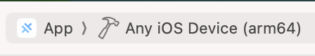

Building and deploying to iOS¶
Building and deploying an app to iOS must be performed by a developer on a Mac computer. This guide does not include the process for managing the app within Apple's App Store Connect console, which is documented elsewhere (see Apple's official documentation, or organisation-specific documentation is available from IDEMS devs on request).
Prerequisites¶
Apple Developer Account¶
In order to create iOS applications, you will need to enrol in the Apple Developer Program, which can be done as an individual or organisation.
XCode¶
In order to run applications locally on an iOS device or simulator (Apple's term for an iOS device emulator), and submit them to the App Store, you will need XCode. XCode is available from the Mac App Store.
You will also need XCode CLI tools. These may have been installed with XCode, run xcode-select -v to check. If not already installed, run xcode-select --install. The CLI tools may need to be configured using the command sudo xcode-select -s /Applications/Xcode.app/Contents/Developer.
CocoaPods¶
CocoaPods is a dependency manager for iOS projects, and is required to build iOS apps via Capacitor. Installing via Homebrew seems to be the best method, via the command brew install cocoapods.
Capacitor iOS setup¶
The project is already configured to build to iOS using Capacitor. See the Capacitor iOS Documentation for full details, or follow the steps below.
Build, sign and upload the iOS app¶
Building for the first time¶
If the deployment has not previously been built for iOS, follow these steps
- Ensure that the deployment is fully configured to be built to iOS, in accordance with the instructions in the deployments section. In particular, ensure the deployment config has values set for
config.ios.app_id = "international.idems.my-example-app" config.ios.app_name = "My Example App" - An up-to-date
GoogleService-Info.plistfile for the deployment's registered Firebase app is required to be populated toios/App/App/GoogleService-Info.plist. This can be downloaded from the Firebase console. - Run
yarn workflow ios configureto generate the relevant iOS build files from the templated files using the values specified in the deployment config. - Generate iOS assets (app icon and splash screen), using the capacitor-assets package. Alternatively, the assets can be generated in XCode directly after step 6.
- Run
yarn build - Run
npx cap sync ios - Run
npx cap open iosto open the project in XCode. - In order to sign the app, in XCode navigate to
App > Targets > App Signing & capabilities. Set the value for the development team, using "Add account" if you have not previously configured XCode with a development team. Ensure that the option "Automatically manage signing" is checked. - Now build the app to a target simulator to test functionality.
- When ready to upload the app to App Store Connect, set the target as "Any iOS device (arm64)", and go to
Product > Archive.  - The process of "archiving" converts your application into the format required to upload it to the App Store. Select "Distribute App" to publish the app to App Store Connect. You will still be able to test the app through TestFlight once it is uploaded before submitting to Apple for review. Choose the options to automatically manage signing and generate a certificate. Click "Upload", and once the process is complete, the app will be available for management through App Store Connect.
Subsequent builds¶
If the deployment has previously been built for iOS, follow these simplified steps to build, test and deploy.
- Run
yarn workflow ios configureto update the relevant iOS build files from the templated files using the values specified in the deployment config. - Run
yarn build - Run
npx cap sync ios - Run
npx cap open iosto open the project in XCode. - Now build the app to a target simulator to test functionality.
- When ready to upload the app to App Store Connect, set the target as "Any iOS device (arm64)", and go to
Product > Archive. - The process of "archiving" converts your application into the format required to upload it to the App Store. Select "Distribute App" to publish the app to App Store Connect. You will still be able to test the app through TestFlight once it is uploaded before submitting to Apple for review. Choose the options to automatically manage signing and generate a certificate. Click "Upload", and once the process is complete, the app will be available for management through App Store Connect.